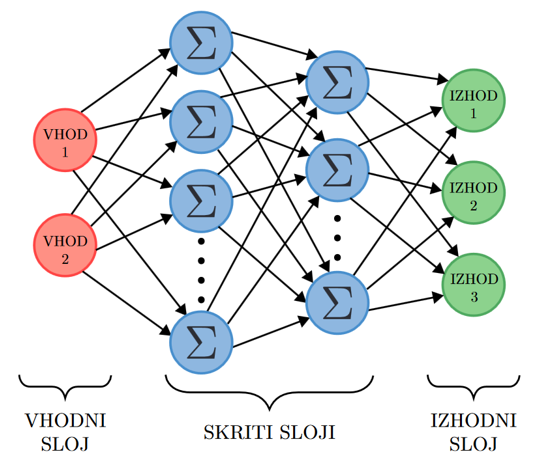

Učenje z nevronskimi mrežami z metodo DQN
- Učenje z nevronskimi mrežami z metodo DQN
- Uporabimo python paket Stable Baselines3 (SB3)
- Stable-Baselines3 Docs
- Stable Baselines3 omogoča celo vrsto drugih algoritmov
- A2C
- PPO
- Razširitev SB3 Contrib
- dodatni sodobnejši algoritmi
- SB3 Contrib dokumentacije
- Github repozitorij

Python skripta za učenje agenta
- Nova python skripta
-
Incializacija okolja in učenja
3. Preverimo prostor akcij in opazovanja -
Inicializiramo učenje agenta
-
Podatki za inicializacijo so na spletni strani ter na rl-baselines3-zoo
policy_kwargs = dict(net_arch=[256, 256]) model = DQN('MlpPolicy', env=env, learning_rate=4e-3, batch_size=128, buffer_size=10000, learning_starts=1000, gamma=0.99, target_update_interval=600, train_freq=16, gradient_steps=8, exploration_fraction=0.2, exploration_final_eps=0.07, policy_kwargs=policy_kwargs, seed=2, verbose=1 ) -
Učenje agenta
-
Shranimo model
Python skripta za testiranje agenta
- Nova python skripta
-
Incializacija okolja in učenja
-
Naložimo in incializiramo agenta
-
Zaženemo in testiramo agenta
mean_reward, std_reward = evaluate_policy(model, model.get_env(), n_eval_episodes=10) print(f'Mean reward: {mean_reward}, Std reward: {std_reward}') obs = env.reset() while True: action, _state = model.predict(obs, deterministic=True) obs, reward, done, info = env.step(action) env.render() if done: obs = env.reset()